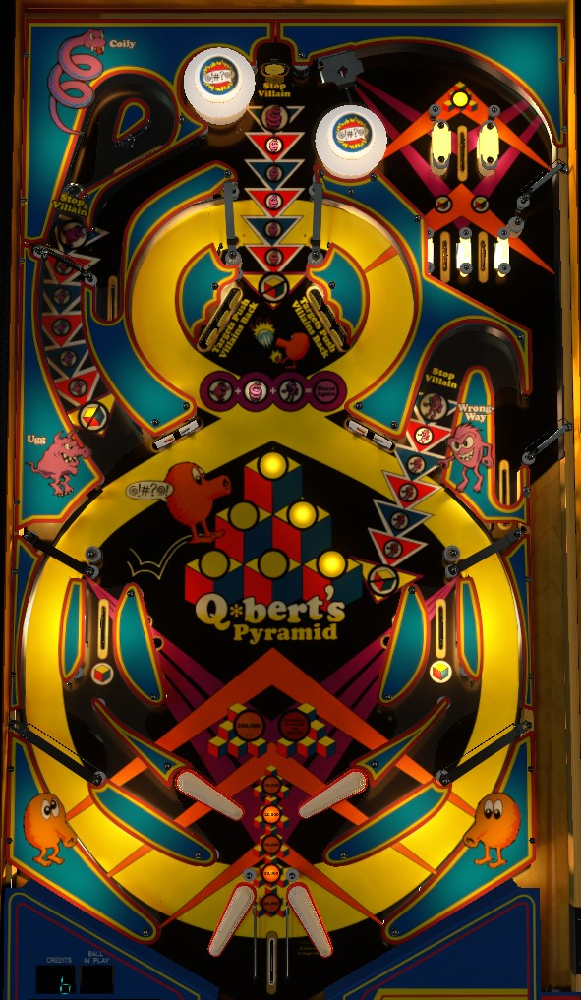

Make the single upper top lane to instantly complete a pyramid; make a lit rollover lane or complete a 2-bank of drop targets to light one of the 6 spots on a pyramid. The left captive ball, back center standup target, and right u-turn lane are occasionally lit for villains; bash their shots to defeat the villain and score points. The faster you bash a villain, the more it's worth, and if you bash all 3 villains at the earliest possible point over the course of the game, you get an extra ball. The second set of flippers below the conventional ones are operated backwards, with the bottom left flipper using the right button.
Progress on the current Pyramid level is shown by the six inserts in the center of the playfield. Light all 6 to complete the Pyramid. Each drop target down in either 2-bank scores 5,000 points; completing either 2-bank resets it and lights one of the six Cubes on the current Pyramid. The two lanes in the lower level of the top lanes are lit alternately for one Cube; these alternate based on pop bumper hits, and lanes score 5,000 points whether lit or not. The in lanes are also lit alternately for one Cube and also score 5,000 points whether lit or not, but these alternate on slingshot hits. Finally, the single lane that makes up the upper level of the top lanes is always lit for 10,000 points and completes the entire current Pyramid.
Pyramid progress is your end of ball bonus. Each light on the current Pyramid is worth 3,000 points. Completed Pyramids are worth 20,000 points. Up to 10 completed Pyramids can be stored in memory. Progress on the current Pyramid is also held over from ball to ball. Depending on game settings, an instant Special can be earned by completing 5, 6, 7, or 8 Pyramids.
Villains can appear at the left captive ball shot (Ugg), back center standup target (Curly), or right u-turn lane (Wrong Way). At first, the larger insert will be flashing, periodically moving down the line of inserts towards the "no cube" symbol. The more Cubes you have lit on the current Pyramid, the faster the Villain moves towards you. Hitting any yellow standup target in either of the upper center 3-banks scores 5,000 points and pushes the current Villain back one step. To bash a lit Villain, make a full hit to the left captive ball, hit the back center standup target, or make the right kicker. Bashing a Villain in the earliest position scores 40,000 points; this value decreases by 5,000 for each step it has moved. If the Villain makes it to the "no cube" symbol, they will steal one lit Cube on the current Pyramid (this means nothing if you have no lit Cubes).
Villains can also be stopped by making Loop Shots, which consists of using one of the lower flippers to have the ball follow the large figure 8 track up one side of the table, crossing over in the middle, then curving back around the center arena and hitting both of the rollunder switches that are near the 3-banks of standup targets.
Bashing a villain by shooting its shot when that villain is only in the first position, or by making a Loop Shot at any time, lights that villain's insert near the standup target 3-banks. If you lit all 3 villains in this way, you score an instant extra ball. Lit villains are preserved from ball to ball in a 3-ball game, but this progress is lost between balls in a 5-ball game. If you light all 3 villains and collect their extra ball, they will always be unlit at the start of the next ball so you can earn the extra ball again.
Q*bert's Quest has two flippers in the conventional locations. Feeding to these flippers are the in lanes, which score 5,000 points and are lit alternately to add one Cube. The in lane rail is cut off at the corners, so the ball can fall out of the in lane on both sides. A ball going down the "out lanes" or falling out of the in lane is fed to a lower rail, which directs the ball underneath the flippers, where it can fall into the center out lane or land on one of the two lower flippers. The center out lane always scores 10,000 points and one Cube, and it also always drains the ball. The ball also drains if you do not flip a lower flipper in time. The lower flippers are always available to be used, but they are operated with the opposite flipper buttons from what you expect: the lower left flipper uses the right button, and the lower right flipper uses the left button. To avoid uncertainty, just press both flipper buttons if you see the ball is about to land on either lower flipper.
See "Collecting Cubes and Pyramids" above.
In competition/novelty play, extra balls and specials score 100,000 points each.
In a 5-ball game, everything that was described as scoring 5,000 points in this guide will score only 3,000 instead. Also, on 5-ball play, pop bumpers score 500 points instead of 1,000.
The Pyramid Special can be scored alongside the 5th, 6th, 7th, or 8th Pyramid completion. If you're playing a 5-ball game, the options change to being the 6th, 7th, 8th, or 9th Pyramid completion.